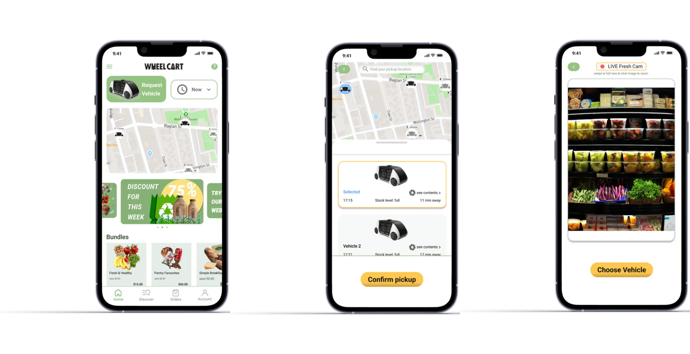
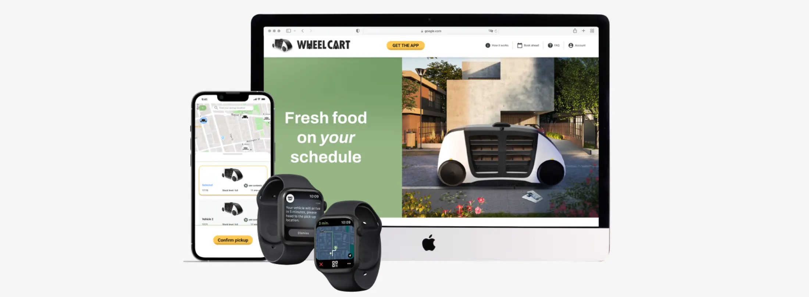
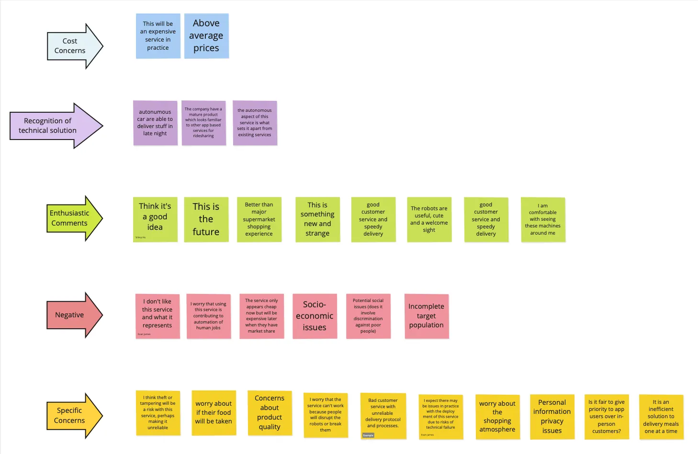
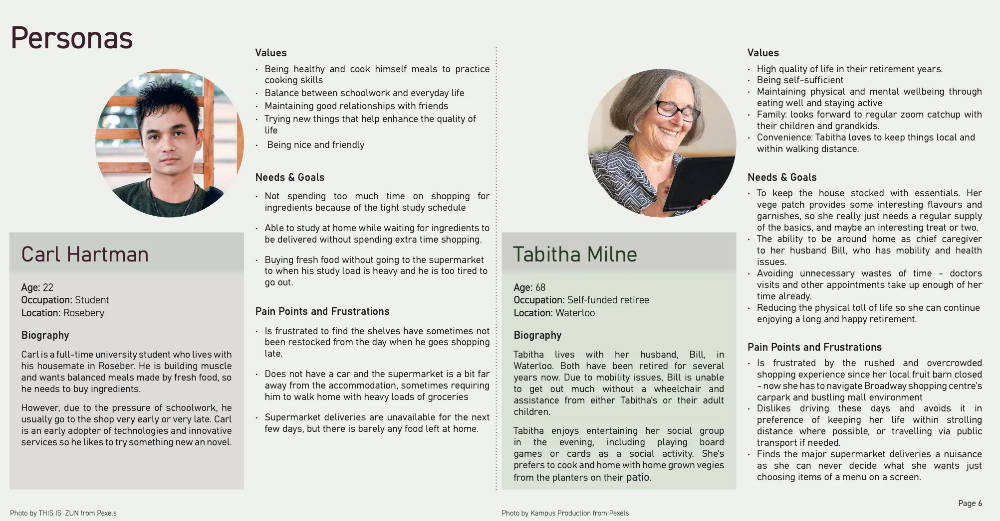
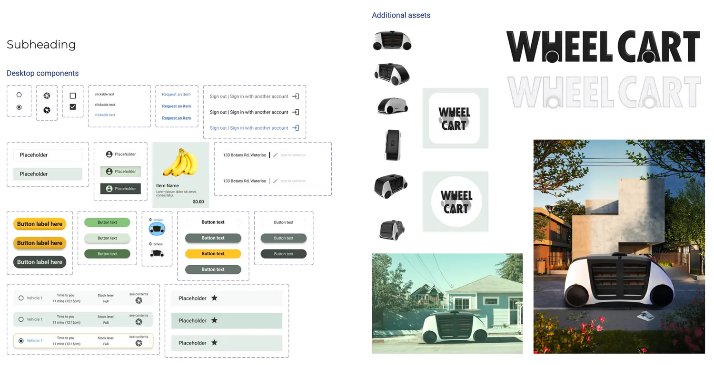
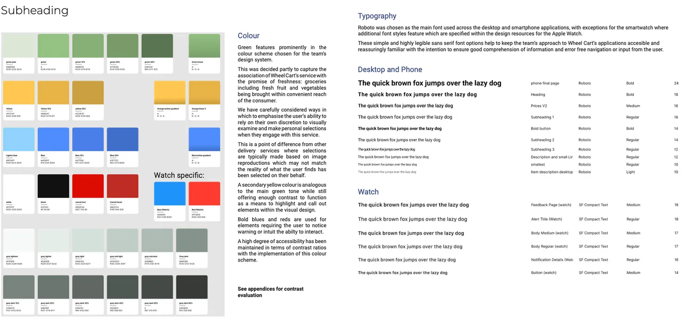
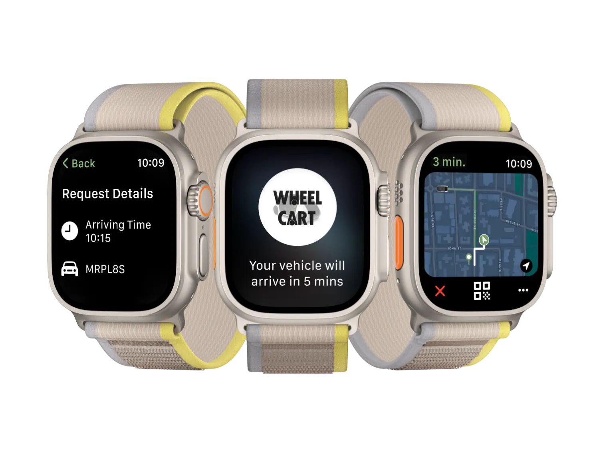

Smartphone ｜ the primary touchpoint

The smartphone serves as the primary touchpoint for calling the autonomous store, browsing available products, monitoring food freshness, and tracking delivery in real time.

2023 ｜ Sydney ｜ School Project
Wheel Cart is a speculative UX/UI
project exploring a mobile autonomous
grocery store. The experience spans desktop, smartphone, and smartwatch,
supporting users from browsing and
ordering to real-time delivery tracking.
Wheel Cart explores the future of grocery shopping
through a mobile autonomous store. Combining
speculative research and emerging technologies, the
project creates a connected experience across
desktop, smartphone, and smartwatch, reimagining
grocery shopping as a more convenient and flexible
on-demand service.
“Bring Groceries Into Your Future.”
As autonomous mobility and on-demand services
continue to evolve, grocery shopping has the
potential to move beyond fixed retail spaces.
However, introducing an autonomous mobile store
also creates new challenges around trust, product
quality, service transparency, and
cross-device interaction.
How Might We design a seamless multi-device experience that allows users to explore, order, and receive groceries effortlessly across desktop, smartphone, and smartwatch?
How Might We build trust and confidence in autonomous grocery shopping by clearly communicating product freshness, delivery status, and vehicle functions?


The experience connects browsing, vehicle requests,
delivery tracking, and handover across
multiple devices.
The design system establishes a consistent visual
language across desktop, smartphone, and
smartwatch experiences. A shared set of colors,
typography, components, and interface patterns
helps maintain clarity and familiarity while allowing
each device to adapt to its specific
interaction context.



The smartphone serves as the primary touchpoint for calling the autonomous store, browsing available products, monitoring food freshness, and tracking delivery in real time.
The desktop experience supports grocery browsing, vehicle selection, and account management through clear navigation and consistent interface patterns, helping users complete key tasks with minimal friction.

The smartwatch experience provides glanceable updates and simplified controls during last-mile delivery and order handover, allowing users to check status and complete key actions without opening their phone.
This project strengthened my ability to translate speculative research into practical design decisions. By working across multiple devices, I also learned how to create a cohesive user experience while adapting interactions to different contexts and user needs.